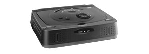

GoldStar GPI 1100

The GPI 1100 was basically a GPI 1200 without an LCD screen. It turned out that the small design of the portable player was ideally suitable for in-store and kiosk applications, where there was no need for the LCD screen. This 68341-based player had integrated MPEG decoding.